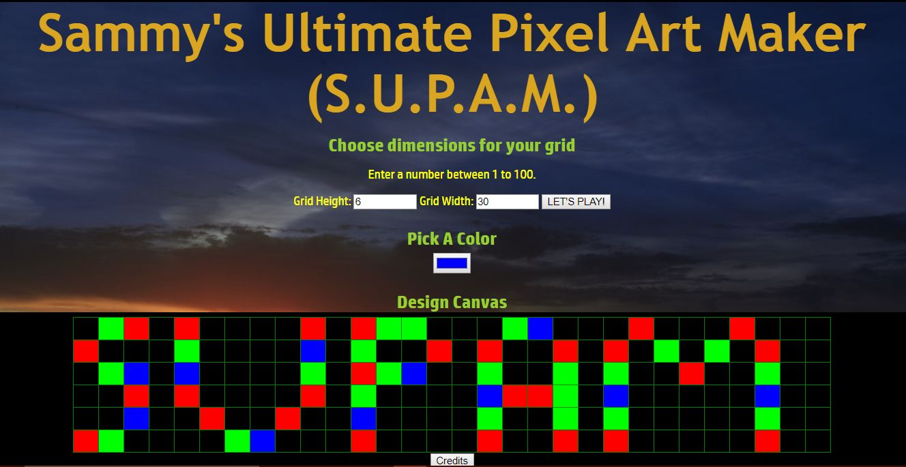
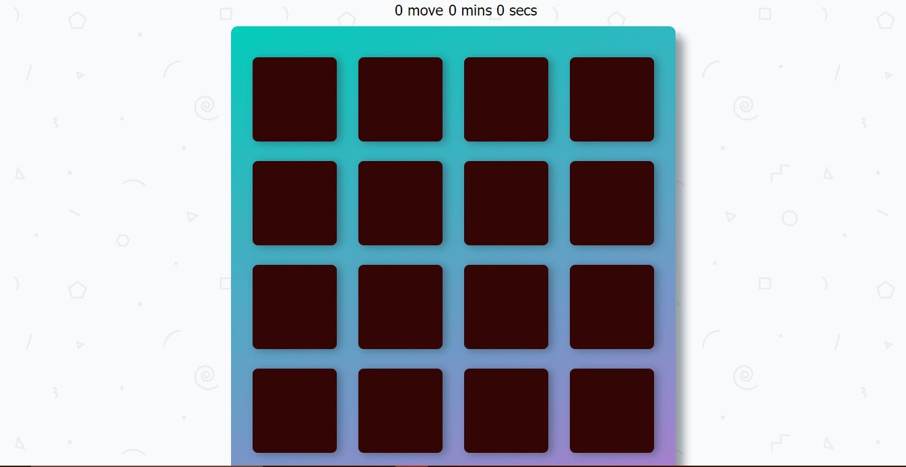
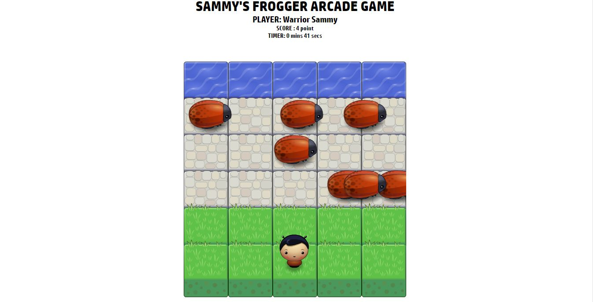

Featured Work
Sammy's Ultimate Pixel Art Maker
This requires user input in order to create a table of any size according to specifications and design the table with any color of choice. Have fun creating the most awesome designs on your own system. Test out your creativity!!!
Matching game
This is a simple game of matching different symbols hidden under cards. Try to beat the clock and the number of moves used to achieve success! Goodluck!
Sammy's Frogger Arcade Game
This is a game requiring input from the keyboard of a PC to navigate the warrior across the highway of bugs without being hit by any of the bugs and going into safety on the river. The game requires user name as input and number of minutes which the user wishes to play. Goodluck beating your highscore. Its fun to note that if the warrioris hit by a bug, his position is reset and he losses a point. We are working on adding touch functionality for touchscreen devices, please be patient as this amazing game comes to mobile very soon.
OTHER IMPORTANT NOTES
Due to the IOU on some projects, I am not able to post them on my Port-Folio page. However, my skills include the use of the following: